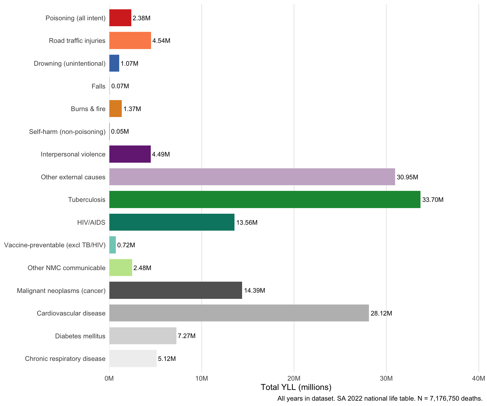
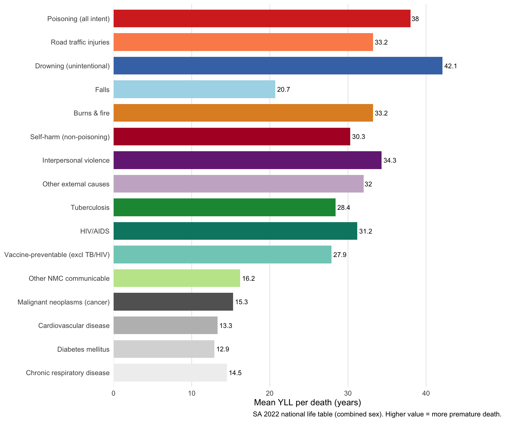
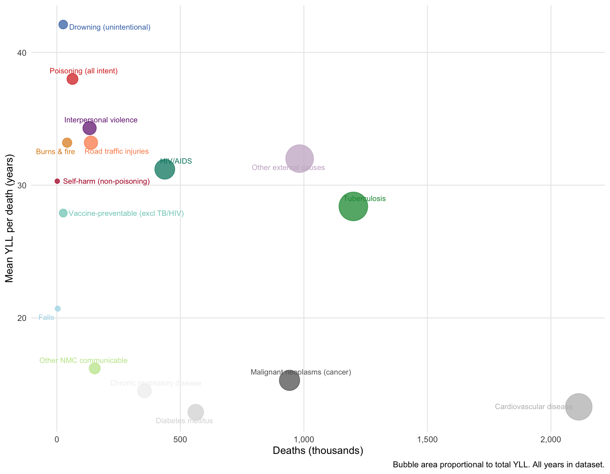
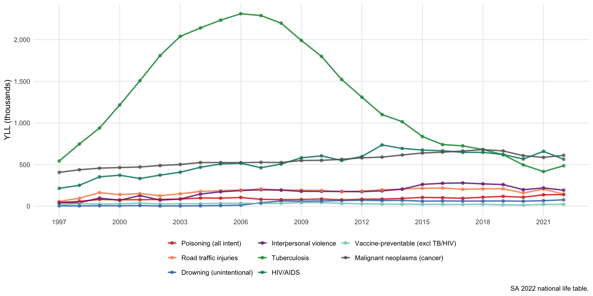
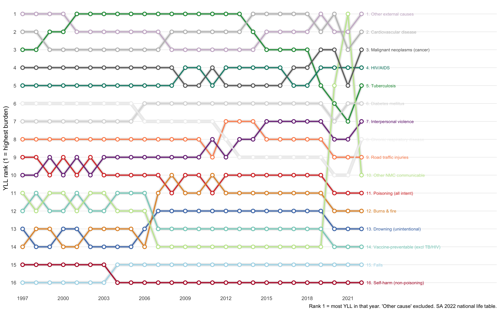
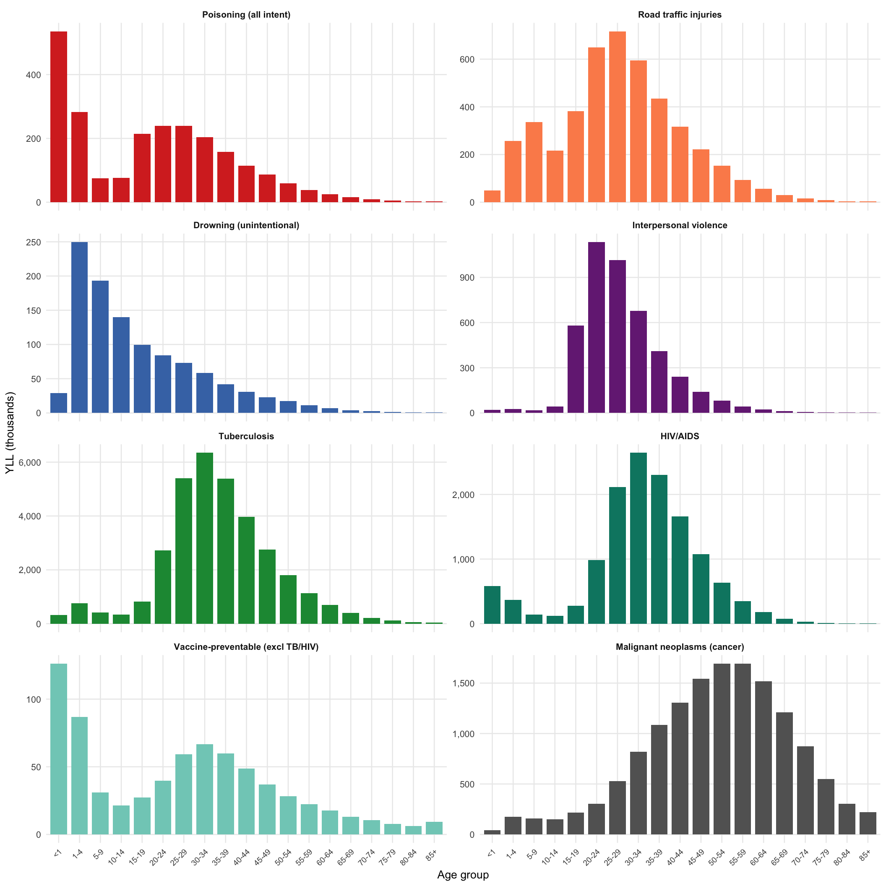
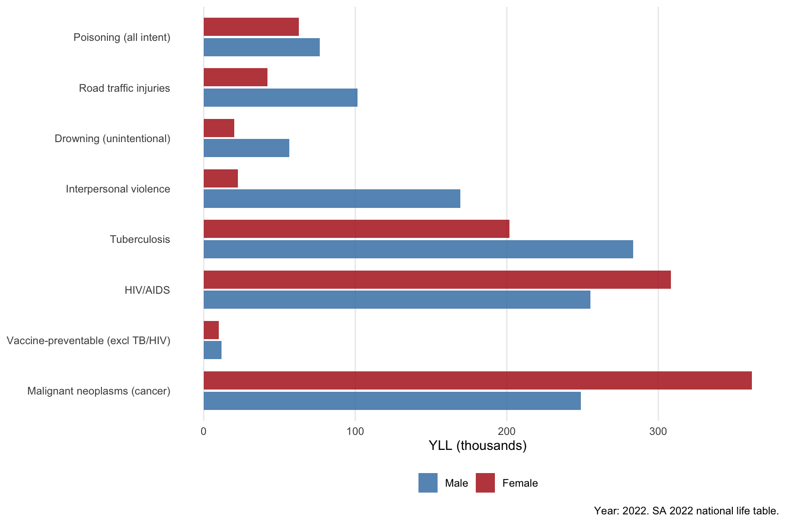

Cause group | Deaths (N) | YLL (total) | Mean YLL/death | YLL (% of total) | % missing age |
|---|---|---|---|---|---|
Other cause | 5,946,420 | 171,840,084 | 29.1 | 53.3% | 0.6 |
Tuberculosis | 1,200,263 | 33,704,411 | 28.4 | 10.5% | 1.0 |
Other external causes | 982,740 | 30,945,158 | 32.0 | 9.6% | 1.5 |
Cardiovascular disease | 2,112,688 | 28,122,649 | 13.3 | 8.7% | 0.3 |
Malignant neoplasms (cancer) | 941,865 | 14,391,996 | 15.3 | 4.5% | 0.2 |
HIV/AIDS | 436,931 | 13,562,239 | 31.2 | 4.2% | 0.6 |
Diabetes mellitus | 562,190 | 7,271,471 | 12.9 | 2.3% | 0.1 |
Chronic respiratory disease | 354,854 | 5,124,835 | 14.5 | 1.6% | 0.3 |
Road traffic injuries | 138,018 | 4,536,314 | 33.2 | 1.4% | 1.0 |
Interpersonal violence | 132,406 | 4,485,547 | 34.3 | 1.4% | 1.1 |
Other NMC communicable | 153,225 | 2,476,461 | 16.2 | 0.8% | 0.2 |
Poisoning (all intent) | 63,178 | 2,381,529 | 38.0 | 0.7% | 0.8 |
Burns & fire | 41,619 | 1,365,264 | 33.2 | 0.4% | 1.2 |
Drowning (unintentional) | 25,679 | 1,067,114 | 42.1 | 0.3% | 1.2 |
Vaccine-preventable (excl TB/HIV) | 25,898 | 718,829 | 27.9 | 0.2% | 0.6 |
Falls | 3,557 | 73,173 | 20.7 | 0% | 0.5 |
Self-harm (non-poisoning) | 1,639 | 49,416 | 30.3 | 0% | 0.5 |
Years of Life Lost: NMC Conditions in Comparative Perspective
1 Background
Years of Life Lost (YLL) is a summary measure of premature mortality that weights each death by the remaining life expectancy the deceased would have had if they had not died. Unlike simple death counts, YLL captures how early deaths occur: a death at age 5 contributes far more YLL than a death at age 75, even though both count as one death.
This analysis applies the South Africa 2022 national life table (Statistics South Africa) as the reference standard. For each death in the vital registration dataset, YLL is calculated as the remaining life expectancy at the age of death. Results are summarised across cause groups spanning:
- External causes — poisoning, road traffic injuries, drowning, interpersonal violence, self-harm, falls, burns
- NMC communicable conditions — tuberculosis, HIV/AIDS, vaccine-preventable diseases, other notifiable infections
- Chronic non-communicable conditions — cancers, cardiovascular disease, diabetes
YLL values use an approximated South Africa 2022 combined-sex abridged life table derived from Statistics South Africa mid-year population estimates. Exact single-year values should be substituted from the official StatsSA P0302.3 (2022 edition) when published. All figures may differ slightly from GBD or WHO estimates, which use global frontier reference tables.
The dataset contains deaths from 1997 - 2022. The overall summary table covers all years; the “most recent year” table uses 2022 only.
2 Notifiable Medical Conditions (NMC) — ICD-10 Mapping
The table below summarises South Africa’s Notifiable Medical Conditions (NMCs) under the National Health Act (Government Gazette No. 38764, 2015) and their corresponding ICD-10 underlying-cause-of-death codes as expected in Stats SA vital registration data.
NMC condition | ICD-10 UCD codes | Category | Vaccine / intervention context |
|---|---|---|---|
Diphtheria | A36 | Vaccine-preventable | Vaccine: DTP / DTP-HepB-Hib |
Pertussis (whooping cough) | A37 | Vaccine-preventable | Vaccine: DTP / DTP-HepB-Hib |
Tetanus (neonatal) | A33 | Vaccine-preventable | Vaccine: DTP |
Tetanus (other) | A34-A35 | Vaccine-preventable | Vaccine: DTP |
Poliomyelitis (wild/vaccine-derived) | A80 | Vaccine-preventable | Vaccine: OPV/IPV |
Measles | B05 | Vaccine-preventable | Vaccine: Measles / MMR |
Rubella | B06 | Vaccine-preventable | Vaccine: MMR |
Congenital rubella syndrome | P35.0 | Vaccine-preventable | Vaccine: MMR (maternal immunisation) |
Hepatitis B (acute) | B16 | Vaccine-preventable | Vaccine: HepB (birth dose + EPI) |
Hepatitis B (chronic / NOS) | B17-B19 | Vaccine-preventable | Vaccine: HepB |
Meningococcal disease | A39 | Vaccine-preventable | Vaccine: MenC/MenACWY |
Influenza (novel subtypes / pandemic) | J09-J11 | Vaccine-preventable | Vaccine: seasonal influenza |
Yellow fever | A95 | Vaccine-preventable | Vaccine: YF (endemic risk only) |
Cholera | A00 | Enteric / waterborne | Vaccine: OCV (oral cholera vaccine) |
Typhoid fever | A01 | Enteric / waterborne | No routine vaccine in SA |
Shigellosis (bacillary dysentery) | A03 | Enteric / waterborne | No routine vaccine in SA |
Non-typhoidal Salmonella (food-borne) | A02 | Enteric / waterborne | No routine vaccine in SA |
Hepatitis A | B15 | Enteric / waterborne | No routine vaccine in SA |
Viral hepatitis E | B17.2 | Enteric / waterborne | No routine vaccine in SA |
Malaria | B50-B54 | Vector-borne | Vaccine: SP2 pilot / RTS,S |
Dengue fever | A90-A91 | Vector-borne | No routine vaccine in SA |
Rift Valley fever | A92.4 | Vector-borne | No routine vaccine in SA |
Plague | A20 | Vector-borne | No routine vaccine in SA |
Rabies | A82 | Zoonotic / contact | No routine vaccine in SA |
Brucellosis | A23 | Zoonotic / contact | No routine vaccine in SA |
Anthrax | A22 | Zoonotic / contact | No routine vaccine in SA |
Leptospirosis | A27 | Zoonotic / contact | No routine vaccine in SA |
Haemorrhagic fever (viral / NOS) | A96-A99 | Zoonotic / contact | No routine vaccine in SA |
Legionellosis | A48.1 | Respiratory | No routine vaccine in SA |
SARS / COVID-19 | U07-U08 / J06.9 | Respiratory | Vaccine: COVID-19 (emergency) |
Middle East respiratory syndrome (MERS) | B34.4 | Respiratory | No routine vaccine in SA |
Tuberculosis (all forms) | A15-A19 | High-burden communicable | Vaccine: BCG (protects against severe TB in children) |
HIV/AIDS | B20-B24 | High-burden communicable | Vaccine: none (PMTCT / ART programme) |
Syphilis (congenital) | A50 | STI / blood-borne | No vaccine; PMTCT / STI management |
Neonatal ophthalmia (gonococcal/chlamydia) | P39.1 / A74.0 | STI / blood-borne | No vaccine; ophthalmic prophylaxis |
Hepatitis C | B17.1 | STI / blood-borne | No vaccine; HCV treatment |
Poisoning — accidental / unspecified | X40-X49 | Environmental / toxic / external | Notifiable: food/pesticide/household |
Poisoning — intentional self-harm | X60-X69 | Environmental / toxic / external | Notifiable: self-inflicted toxic exposure |
Poisoning — assault | X85 | Environmental / toxic / external | Notifiable: homicidal poisoning |
Poisoning — undetermined intent | Y10-Y19 | Environmental / toxic / external | Notifiable: undetermined toxic exposure |
Food-borne illness (notifiable outbreak) | A02 / A05 / A06 | Environmental / toxic / external | Notifiable: outbreak reporting |
Poisoning deaths in Stats SA vital registration data are subject to systematic intent misclassification: because South Africa’s death notification form lacks a certified manner-of-death field, ICD-10 Vol. 2 rules assign the accidental code by default when intent is unstated. As a result, the X40–X49 (accidental) category substantially over-counts genuinely accidental poisonings, absorbing cases of self-harm and assault. See the Poisoning Deaths analysis for a detailed discussion.
3 YLL Summary: All Years (1997 - 2022)
4 YLL Summary: Most Recent Year (2022)
Cause group | Deaths (N) | YLL (total) | Mean YLL/death | YLL (% of total) |
|---|---|---|---|---|
Other cause | 201,236 | 5,406,385 | 26.9 | 48.5% |
Other external causes | 45,235 | 1,387,566 | 30.7 | 12.5% |
Cardiovascular disease | 98,969 | 1,286,246 | 13.0 | 11.5% |
Malignant neoplasms (cancer) | 41,511 | 610,878 | 14.7 | 5.5% |
HIV/AIDS | 20,815 | 563,573 | 27.1 | 5.1% |
Tuberculosis | 20,106 | 485,463 | 24.1 | 4.4% |
Diabetes mellitus | 32,901 | 430,827 | 13.1 | 3.9% |
Interpersonal violence | 5,815 | 192,139 | 33.0 | 1.7% |
Chronic respiratory disease | 11,841 | 155,455 | 13.1 | 1.4% |
Road traffic injuries | 4,592 | 143,724 | 31.3 | 1.3% |
Other NMC communicable | 8,582 | 143,549 | 16.7 | 1.3% |
Poisoning (all intent) | 3,981 | 139,320 | 35.0 | 1.3% |
Burns & fire | 2,814 | 94,314 | 33.5 | 0.8% |
Drowning (unintentional) | 1,972 | 76,624 | 38.9 | 0.7% |
Vaccine-preventable (excl TB/HIV) | 845 | 21,629 | 25.6 | 0.2% |
Falls | 156 | 2,671 | 17.1 | 0% |
Self-harm (non-poisoning) | 52 | 1,643 | 31.6 | 0% |
5 Figures
5.1 Total YLL by cause group
Total YLL summed across all years. The length of each bar reflects both the number of deaths and how prematurely they occurred.

5.2 Mean YLL per death (prematurity)
Mean YLL per death indicates how premature deaths are within each cause group. Groups at the top die youngest relative to the SA reference life table; groups at the bottom have deaths concentrated at older ages.

5.4 Deaths vs mean YLL: positioning causes across burden dimensions
The scatter plot places each cause group in a two-dimensional space. The x-axis measures total volume (deaths), the y-axis measures prematurity (mean YLL per death), and bubble area is proportional to total YLL — the product of both dimensions.

5.5 YLL trends over time
Annual YLL for selected cause groups. Years with incomplete registration or changes in coding practice will produce artefactual dips or spikes.

5.6 YLL rank over time (bump chart)
Each line tracks the YLL rank of a cause group from year to year (rank 1 = the group with the most YLL that year). A rising line means a group is losing relative burden; a falling line means it is gaining ground compared with other causes. This view is particularly useful for policymakers asking “is this problem getting worse relative to other causes?”

5.7 YLL by age group
The panel charts show the age distribution of YLL for each selected cause group. Because YLL weights young deaths more heavily, the peak of each panel will be shifted younger than the peak of the corresponding death count.

5.8 YLL by sex (most recent year)

6 Poisoning YLL breakdown by intent
Intent | Deaths | YLL (total) | Mean YLL/death |
|---|---|---|---|
Accidental/unspec. | 27,414 | 1,163,081 | 42.8 |
Undetermined | 33,144 | 1,129,207 | 34.3 |
Self-harm | 2,614 | 89,040 | 34.2 |
Assault | 6 | 201 | 33.5 |
7 Methods note
7.1 YLL formula
For each death \(i\) at age \(a_i\):
\[\text{YLL}_i = e(a_i)\]
where \(e(a_i)\) is the remaining life expectancy from the SA 2022 national life table at age \(a_i\). Total YLL for a cause group is \(\sum_i \text{YLL}_i\); mean YLL per death is \(\bar{\text{YLL}} = \text{Total YLL} / N\).
This follows the standard WHO/GBD approach (Murray & López 1996; GBD 2019), adapted to use a country-specific rather than frontier reference life table.
7.2 Cause group assignment
Cause groups are assigned based on the 3-character ICD-10 underlying cause of death code using sequential prefix matching. Groups are mutually exclusive (first-match priority). Key boundary decisions:
| Boundary point | ICD-10 codes | Assignment |
|---|---|---|
| Poisoning assault (X85) | Counted with poisoning, not with interpersonal violence | Poisoning (all intent) |
| Drowning — unintentional only | W65-W74 | Drowning (unintentional) |
| Self-harm by drowning / hanging | X71–X84 | Self-harm (non-poisoning) |
| Violence by firearm / sharp objects | X86–Y09 | Interpersonal violence |
| COVID-19 | U07–U08 | Other NMC communicable |
| TB meningitis (A17), TB of other organs | A15–A19 | Tuberculosis |
7.3 Data limitations
- Intent misclassification (external causes): see poisoning analysis.
- Age missingness: YLL cannot be calculated where age is unknown; the
% missing agecolumn in Table 2 shows the fraction excluded per group. - VR coverage: Stats SA vital registration is known to have incomplete coverage, particularly for younger age groups and provinces with weaker civil registration systems.
- Life table provenance: values used here are provisional approximations. Replace with official Stats SA P0302.3 (2022 edition) for publication.
8 Next steps
- Add population denominators (StatsSA mid-year estimates) to compute YLL rates per 100,000.
- Apply age-standardisation to allow comparisons adjusted for South Africa’s age structure.
- Disaggregate by province and sex for the full time series.
- Sensitivity analysis using the GBD 2019 global frontier life table (e₀ ≈ 88.9 years) for international comparability.
- Link to programmatic data: TB notifications, ART coverage, vaccination coverage, NCoDV forensic data for external causes.